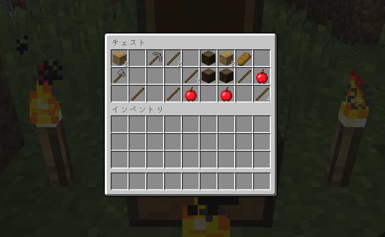
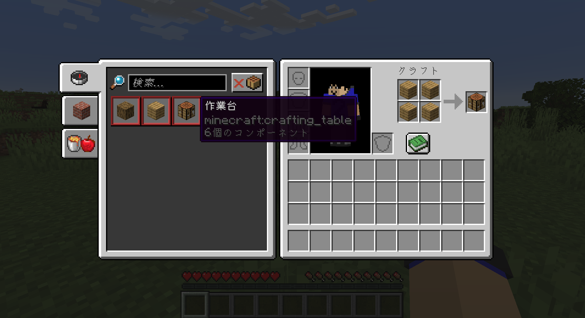
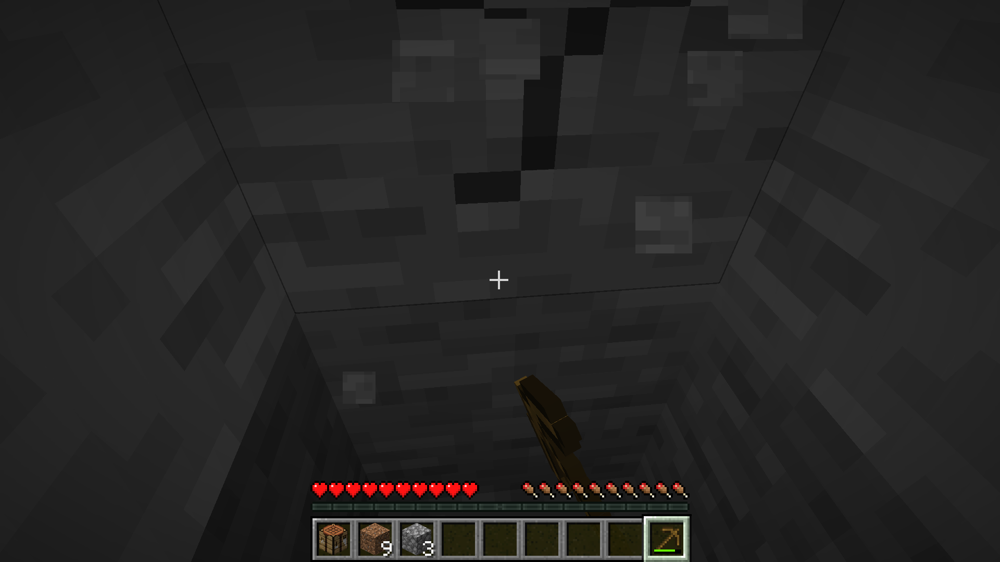

ワールド作成について
まず、初めての方は、「ワールド作成」をクリックし、ゲーム設定で、ゲームモードをサバイバルにし、難易度をピースフル（ピース）に設定するのがおすすめです。ピースフルとは、敵モブがスポーン（出現）せず、ダメージを受けても自動回復します。イージーからハードの難易度は敵モブがスポーンしますが、敵の強さが変わってきます。プレイ中でも難易度は変えられるので安心して変えてください。「ボーナスチェスト」をオンにすることもおすすめです。「ボーナスチェストには」木の道具と石の道具が1つずつ、木や食料が入っているはずです。
ボーナスチェストの中身の例
最初にすると良いこと
最初のスポーン地点に記をつけると良いと思います。リスポーン（復活）地点は「ベッド」に設定できて、「ベッド」が無いと、ゲームオーバーになった場合、最初にスポーンした所に戻って来てしまいます。ベットには羊の羊毛と木材が必要です。村という家が建っているところに行くとベットを奪えます。この後序盤の進め方で説明します。
序盤の進め方
1.まずは木を掘りましょう。草原の所にスポーンしたらいいですが、木がないバイオーム（環境、地形）にスポーンしていたら、歩いたり走ったりして木が生えている所に行きましょう。（草原に出れるといいです）草原がない場合、ワールドを作り直すのがおすすめです。
まずは木をきりましょう
2.「E」キーでインベントリを表示し、緑色の本のマークをおしてレシピを表示させられます

3.木をほったら作業台を作りましょう。左のレシピで作りたいアイテムをクリックして、作り方を表示させれます。材料を新しく得ると、レシピが増えます。
4.作業台を作ったら、右クリックして開きましょう。木で木のつるはしを作りましょう。※1
※1手で石をほっても石をゲットできないので木のつるはしを作ります。 斧やシャベル、桑などは石や鉄以上の鉱石などで作ったほうがいいので作らないほうがいいです。
5.次は石を掘ります。土ブロックや草ブロックを下に掘ったりすると、石が出てきます。石をほると、丸石になってゲットできます。
6.丸石をゲットしたら、作業台を開き、道具をそろえましょう。
7.次はベッドを作ります。羊の羊毛と木材が必要です。作業台で作ります。羊毛は、鉄のインゴット二つでハサミを作ると、ハサミで羊を右クリックして羊毛がゲットできますが、羊を倒してもゲットできます。
洞窟があればそこに入って石を掘ったほうがいいです。イージー以上の場合、暗い所には敵モブがスポーンするので、剣や斧などをもって行きましょう。洞窟なら石炭や鉄、銅、金、ダイヤなどの鉱石が得られるかもしれません。
